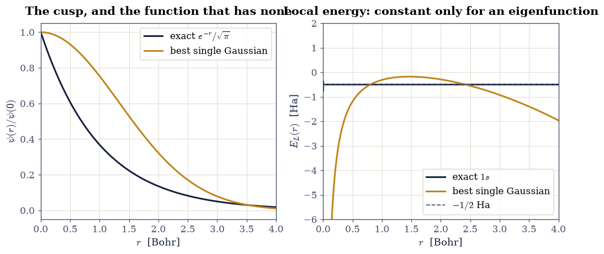
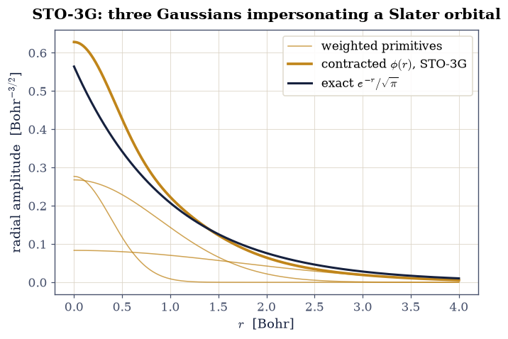
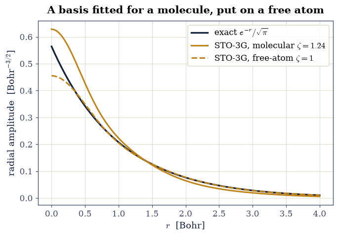
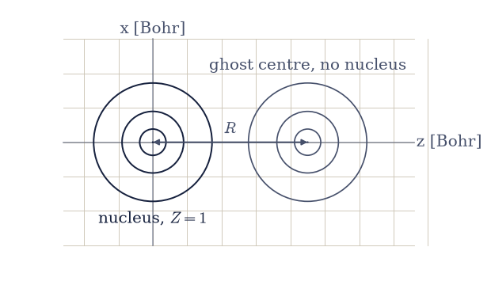
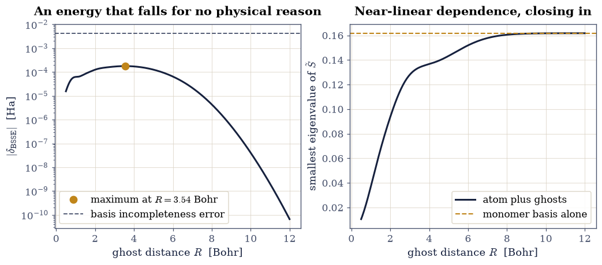
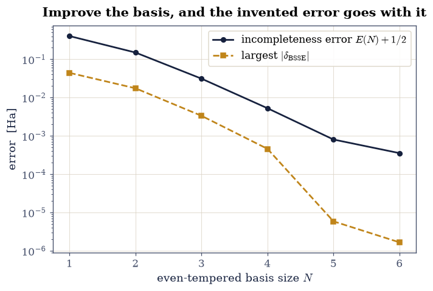
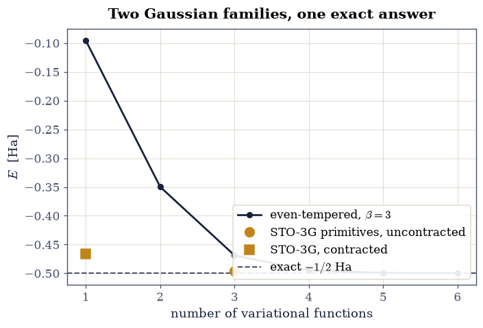

8.18 Basis Sets, and the Error They Invent#
Notebook overview#
This volume has represented a wavefunction in exactly two ways. On a real-space grid, from the radial machinery of §8.1 through the exact laboratory of §8.2, Hartree–Fock in §8.3, the density-functional movement, and the real-time propagation of §8.16. And in plane waves, from §8.10 through the real silicon bands of §8.11 and the optics of §8.15. Both are physicists’ bases. Neither is what quantum chemistry actually runs on. The overwhelming majority of molecular calculations ever performed used a third representation: fixed Gaussian functions glued to the nuclei, invented for one reason, that a product of two Gaussians centred anywhere is a single Gaussian centred somewhere else, which turns every multi-centre integral into elementary functions.
Arriving here after the grid and after plane waves is the honest order, because the third representation is the only one of the three that invents an error the other two cannot have. Its functions are attached to the nuclei, so moving a nucleus moves the basis, and a system’s description improves for reasons that have nothing to do with its physics. That is basis set superposition error, and the centrepiece of this notebook is a demonstration of it on a single electron: a hydrogen atom whose computed energy drops when we place extra basis functions at a distance with no nucleus behind them and no second electron anywhere.
Everything here stays at one electron with \(s\)-type primitives, and that containment is deliberate. General Gaussian integral machinery, meaning two-electron repulsion and arbitrary angular momentum, is a graduate one-semester project, and every serious teaching resource hides it: the standard programming projects ship the integrals in text files, and the well-known teaching packages compute them in compiled code precisely so the student never has to. At one electron with \(s\) functions there is nothing to hide. Every integral we need is a printable closed form, so this notebook builds its own machinery from the first line and validates it against numerical quadrature.
Conventions (this notebook). Hartree atomic units, as everywhere in this volume: the exact hydrogen ground state is \(-1/2\) Ha. Basis functions are unnormalised primitive \(s\)-Gaussians \(\chi_p(\mathbf r) = \exp(-\alpha_p |\mathbf r - \mathbf A_p|^2)\), with normalisation carried by the generalised eigenvalue problem rather than by the functions. There is exactly one nucleus, charge \(Z = 1\), at the origin, and exactly one electron. Matrices are assembled with
numpybroadcasting, the generalised eigenproblem is solved byscipy.linalg.eigh(H, S), and the independent integral checks usescipy.integrate.dblquadin spherical coordinates about the nucleus.How to read the checks. Every exercise closes with a
validatecall against something the computation did not assume: a closed-form integral, a two-dimensional quadrature, an exact eigenvalue, the variational bound, Kato’s cusp condition. A ✓ is strong evidence, not proof; a ✗ is a prompt to locate the discrepancy, which may be a genuine error, a convention mismatch, or a tolerance set too tightly, and not an automatic verdict.Scope, stated plainly. No two-electron integrals, no self-consistent field, no correlation: one electron from beginning to end. Polarisation and diffuse functions are narrated and never computed, because computing them needs \(d\)-functions and general angular momentum, and there is no canonical teaching demonstration of their importance that we could honestly reproduce. Counterpoise correction on a real bound dimer needs a quantum-chemistry package and is named as the horizon, not performed. The single-electron superposition-error demonstration in Exercise 5 has no published teaching precedent that we could find; the course is doing something the teaching literature does not, and says so rather than implying otherwise. For the general machinery, Szabo & Ostlund [SO96], Ch. 3 and Appendix A, is the canonical reference; Martin [Mar04], Ch. 12, places Gaussians beside the plane waves of §8.10.
Theory in brief#
A basis turns a differential equation into a matrix problem#
Expanding an unknown orbital in a fixed set of functions, \(\psi(\mathbf r) = \sum_q c_q \chi_q(\mathbf r)\), and demanding that the Rayleigh quotient be stationary in the coefficients is the variational principle of §6.22 applied to a linear trial function. Because the \(\chi_q\) are in general not orthogonal, stationarity does not produce an ordinary eigenvalue problem but the generalised one built from scratch in §0.5,
The overlap matrix \(\mathbf S\) is the entire difference from a textbook eigenvalue problem, and it is where the trouble in this notebook eventually lives: as basis functions crowd together, \(\mathbf S\) approaches singularity and the expansion stops being able to say anything new. In quantum chemistry Eq. 921 is the Roothaan equation; here, with one electron, \(\hat h\) is the whole Hamiltonian and the lowest \(\varepsilon\) is the whole energy, so the result is a strict variational upper bound on the exact ground state.
Why Gaussians, when Slater functions are the physical ones#
The hydrogenic orbitals of §6.17 decay as \(e^{-\zeta r}\) and have a cusp at the nucleus, so the physically honest basis function is the Slater orbital \(e^{-\zeta r}\). Its integrals over several centres, however, have no elementary closed form. Boys observed in 1950 (S. F. Boys, Proc. R. Soc. A 200, 542) that the physically dishonest choice repairs the arithmetic completely, because the product of two Gaussians on different centres is one Gaussian on a third centre. Writing the primitive as
a short completion of the square gives the Gaussian product theorem, the identity on which the whole of quantum chemistry rests,
A two-centre integral has become a one-centre integral. Szabo & Ostlund [SO96], Appendix A, carries the same completion of the square through to the general two-electron case; here we need only the three one-electron integrals.
The three integrals, in closed form#
With Eq. 923 in hand the overlap is a plain Gaussian integral, the kinetic integral follows from differentiating it twice, and the nuclear attraction needs one extra ingredient because \(1/|\mathbf r - \mathbf C|\) is not a polynomial. For a nucleus of charge \(Z\) at \(\mathbf C\) the three matrices are
with \(p\), \(\mu\), \(\mathbf P\) and \(K\) read off Eq. 923. The extra ingredient is the lowest Boys function, which is what the Coulomb singularity leaves behind after the angular integration,
That is the entire machinery of this notebook: three formulas and an error function. The same three appear as a worked problem in ETH Zürich’s Computational Quantum Physics course (Exercise Sheet 8, Problem 8.1, “re-solving the hydrogen atom in the GTO basis via variational method”), which prints \(S\), \(T\) and \(V\) exactly as above; it is Thijssen, Computational Physics, Ch. 3.2.2, in problem-sheet dress, and Filot, Elements of Electronic Structure Theory, poses the same calculation as Exercise 3.10.
Contraction, and the scaling factor nobody mentions#
A single Gaussian is a poor \(1s\) orbital, and Exercise 2 measures exactly how poor. The standard repair is to fit a Slater orbital with a fixed linear combination of Gaussians and then treat that combination as one basis function. STO-3G, the minimal basis of Hehre, Stewart and Pople (J. Chem. Phys. 51, 2657, 1969), is the three-term least-squares fit,
where the \(N_i\) normalise the primitives (the tabulated \(d_i\) assume normalised primitives) and the \(d_i\) are frozen: the variational problem sees one function, not three. What is rarely said aloud is that the exponents tabulated for hydrogen are not the ones that fit a hydrogen atom. The published fit is made once for \(\zeta = 1\) and then rescaled,
with \(\zeta = 1.24\) for hydrogen, a value chosen because hydrogen in a molecule has a contracted orbital. The Basis Set Exchange (Pritchard et al., J. Chem. Inf. Model. 59, 4814, 2019) distributes the scaled numbers, since molecules are what people compute. Exercise 4 puts both sets on the free atom and finds out what the choice costs.
Kato’s cusp, and why a Gaussian can never satisfy it#
The exact eigenfunction of a Coulomb potential is not smooth at the nucleus. The \(-Z/r\) singularity must be cancelled by the kinetic term, which forces the spherical average \(\bar\psi\) of the wavefunction to obey Kato’s cusp condition,
The hydrogen ground state \(e^{-r}/\sqrt\pi\) satisfies it with slope \(-1\); every Gaussian \(e^{-\alpha r^2}\) has slope \(-2\alpha r \to 0\) and is flat at the origin. A Gaussian basis therefore fails the cusp condition identically, no matter how many functions are added, and the diagnostic that exposes it most sharply is the local energy of §6.22,
which is constant for a true eigenfunction and diverges like \(-Z/r\) for anything flat at the nucleus.
The error the basis invents#
Because Gaussians are attached to nuclei, the quality of a basis at one atom depends on what other atoms are nearby: their functions are available too, and the variational principle will use them. Two atoms brought together are therefore each described better than they were apart, and the resulting spurious attraction is basis set superposition error. The standard diagnosis is the counterpoise construction of Boys and Bernardi (Mol. Phys. 19, 553, 1970): recompute each fragment in the full basis of the pair, with the partner’s nucleus and electrons removed and only its basis functions left behind as “ghosts”. For one electron and one nucleus that construction reads
The inequality is pure linear algebra: enlarging the space in Eq. 921 cannot raise its lowest eigenvalue. Nothing in the argument mentions a second electron or correlation, which is exactly why the demonstration survives all the way down to a single electron, where every other complication is gone and the effect stands alone.
Setup#
Data and instruments only: the series palette, the exact hydrogen numbers this notebook is judged against, the tabulated STO-3G hydrogen parameters, the lowest Boys function, and the closed-form hydrogen \(1s\) orbital of §6.17. This notebook’s own machinery is not here: the three integral matrices of Eq. 924 are written in Exercise 1, the contraction of Eq. 926 in Exercise 3, and the ghost-basis assembly of Eq. 930 in Exercise 5.
The Setup below holds this notebook’s data and instruments — nothing you are asked to build. It is collapsed so the building stays yours; expand it whenever you want the details.
Exercise 1 — The three integrals, written out and certified#
Everything in this notebook is one function call away once the matrices of
Eq. 924 exist, so they are built first and trusted only after they
have survived two independent tests. A basis here is a list of exponents
\(\{\alpha_p\}\) together with a list of centres \(\{\mathbf A_p\}\) in Bohr; the single
nucleus sits at \(\mathbf C = (0,0,0)\) with charge \(Z = 1\). Every matrix element
follows from the four quantities \(p = \alpha_p + \alpha_q\),
\(\mu = \alpha_p\alpha_q/p\), \(\mathbf P = (\alpha_p\mathbf A_p + \alpha_q\mathbf
A_q)/p\) and \(K = e^{-\mu|\mathbf A_p - \mathbf A_q|^2}\) of
Eq. 923, all of which are full \(n \times n\) arrays obtained by
numpy broadcasting rather than by a Python double loop.
The first test is the single-centre limit, where all three integrals collapse to elementary expressions. For one Gaussian of exponent \(\alpha\) sitting on the nucleus, \(|\mathbf A_p - \mathbf A_q| = 0\) and \(|\mathbf P - \mathbf C| = 0\), so Eq. 924 gives \(S = (\pi/2\alpha)^{3/2}\), \(T = \tfrac32\alpha\,S\) and \(V = -\pi Z/\alpha\). The second test is a genuine two-centre pair evaluated by two-dimensional quadrature: for spherically symmetric integrands about the nucleus the volume element is \(2\pi r^2 \sin\theta\,dr\,d\theta\), and the Laplacian needed for the kinetic integral is available in closed form, \(\nabla^2 \chi_q = (4\alpha_q^2|\mathbf r - \mathbf A_q|^2 - 6\alpha_q)\chi_q\).
Part a) Write overlap_matrix(alphas, centres), kinetic_matrix(alphas, centres) and nuclear_matrix(alphas, centres, Z, C) returning the three \(n \times
n\) arrays of Eq. 924, using numpy broadcasting for \(p\), \(\mu\),
\(K\) and \(\mathbf P\) (the outer sum alphas[:, None] + alphas[None, :], the squared
centre separations from numpy.sum over a broadcast difference of the centre array,
and the Setup helper boys_f0 for \(F_0\)). Write this one yourself — the
implementation is the lesson.
Part b) Write basis_energy(alphas, centres, Z=1.0, C=(0,0,0)), which assembles
\(\mathbf H = \mathbf T + \mathbf V\), solves the generalised eigenproblem \(\mathbf
H\mathbf c = \varepsilon\mathbf S\mathbf c\) of Eq. 921 with
scipy.linalg.eigh(H, S) as in
§0.5, and returns the lowest eigenvalue
together with its coefficient vector.
Part c) Certify the single-centre limit for \(\alpha = 0.5\) at the origin against \(S = (\pi)^{3/2} = 5.568328\), \(T = 4.176246\) and \(V = -2\pi = -6.283185\).
Part d) Certify a two-centre pair against scipy.integrate.dblquad: exponents
\(\alpha_p = 3.42525091\) at \((0,0,0)\) and \(\alpha_q = 0.16885540\) at \((0,0,3)\) Bohr,
with the nucleus at the origin, integrating \(r\) over \([0, 20]\) Bohr and \(\theta\)
over \([0, \pi]\). All three off-diagonal elements must agree to twelve digits.
single centre, alpha = 0.5:
S = 5.568327997 closed form (pi/2a)^(3/2) = 5.568327997
T = 4.176245998 closed form (3/2) a S = 4.176245998
V = -6.283185307 closed form -pi Z / a = -6.283185307
two centres, alpha_p = 3.42525091, alpha_q = 0.1688554, separation 3.0 Bohr:
S_pq = 0.192021185748 quadrature 0.192021185748
T_pq = 0.003195028894 quadrature 0.003195028894
V_pq = -0.401200808038 quadrature -0.401200808038
Validation 1 — the machinery earns its trust#
The single-centre elements must equal \((\pi/2\alpha)^{3/2} = 5.568328\), \(\tfrac32\alpha S = 4.176246\) and \(-\pi Z/\alpha = -6.283185\), and the three two-centre elements must reproduce the two-dimensional quadrature to twelve digits.
✓ single-centre overlap [got 5.56833 vs expected 5.56833 (rtol=1e-12, atol=1e-09)]
✓ single-centre kinetic [got 4.17625 vs expected 4.17625 (rtol=1e-12, atol=1e-09)]
✓ single-centre attraction [got -6.28319 vs expected -6.28319 (rtol=1e-12, atol=1e-09)]
✓ two-centre overlap vs quadrature [got 0.192021 vs expected 0.192021 (rtol=1e-11, atol=1e-09)]
✓ two-centre kinetic vs quadrature [got 0.00319503 vs expected 0.00319503 (rtol=1e-11, atol=1e-09)]
✓ two-centre attraction vs quadrature [got -0.401201 vs expected -0.401201 (rtol=1e-11, atol=1e-09)]
True
Exercise 2 — One Gaussian is a bad hydrogen atom#
The smallest possible basis is one \(s\)-Gaussian sitting on the nucleus, and Eq. 921 then has a single row. Its energy is the ratio of the one-by-one matrices, and the closed forms quoted in Exercise 1 turn it into a function of the exponent alone,
whose minimum can be found by hand: \(dE/d\alpha = 0\) at \(\alpha = 8/(9\pi) = 0.2829421\), giving \(E = -4/(3\pi) = -0.4244132\) Ha. Against the exact \(-0.5\) that is a 15 % error from a function which is, in every other respect, perfectly reasonable. The reason is entirely local. A Gaussian is flat at the origin while the exact orbital has a kink there, and Eq. 928 says the kink is not decoration but a requirement: it is what cancels the \(-Z/r\) singularity. The sharpest way to see the failure is the local energy of Eq. 929, which is exactly \(-1/2\) everywhere for \(e^{-r}/\sqrt\pi\) and unbounded below for any Gaussian.
Part a) Minimise \(E(\alpha)\) over \(\alpha \in [0.05, 2.0]\) with
scipy.optimize.minimize_scalar(method="bounded"), evaluating the objective through
the basis_energy you wrote in Exercise 1 (a one-function basis at the origin), and
compare the result against \(\alpha^\star = 8/(9\pi)\) and \(E^\star = -4/(3\pi)\) from
Eq. 931.
Part b) On the radial grid \(r \in [10^{-3}, 6]\) Bohr with spacing \(10^{-3}\) Bohr,
compute the local energy \(E_L(r) = -\tfrac12 \nabla^2\psi/\psi - Z/r\) for both
\(\psi = e^{-\alpha^\star r^2}\) and \(\psi = e^{-r}/\sqrt\pi\), taking the radial
Laplacian \(\psi'' + (2/r)\psi'\) by two applications of numpy.gradient rather than
from the analytic derivative. The exact orbital must return \(-1/2\); the Gaussian must
diverge as \(r \to 0\). Judge the constancy on \(r \ge 0.05\) Bohr only, because the
\(2/r\) prefactor multiplies the finite-difference error of \(\psi'\) and the innermost
few points are dominated by discretisation rather than by physics.
Part c) Evaluate the logarithmic derivative \(\psi'/\psi\) at the innermost grid point for both functions and compare against Kato’s condition Eq. 928, which demands \(-Z = -1\); plot both orbitals and both local energies.
optimal exponent alpha* = 0.2829421 closed form 8/(9 pi) = 0.2829421
optimal energy E* = -0.4244132 Ha closed form -4/(3 pi) = -0.4244132
error against the exact -0.5 Ha: +0.07559 Ha (15.1 %)
local energy of the exact 1s : mean -0.50000003 Ha, spread 2.75e-07 Ha
local energy of the Gaussian : at r = 0.002 Bohr, -499.22 Ha; spread 1.87 Ha
cusp d(ln psi)/dr at r -> 0 : exact -1.000000 (Kato demands -Z = -1.0), Gaussian -0.001132

Fig. 829 Why one Gaussian cannot be a hydrogen atom. Left: the variationally optimal \(s\)-Gaussian \(e^{-\alpha^\star r^2}\) with \(\alpha^\star = 8/(9\pi)\) (amber) against the exact orbital \(e^{-r}/\sqrt{\pi}\) (ink), both normalised to unit value at the origin; the exact curve enters the nucleus with slope \(-Z = -1\) while the Gaussian arrives flat. Right: the local energy \(E_L = \hat H\psi/\psi\) of both, computed by finite differences; it is the constant \(-1/2\) Ha for the exact orbital, as an eigenfunction must give, and diverges like \(-1/r\) for the Gaussian, which is the cusp condition failing in energy units.#
Validation 2 — the optimum, the bound, and the cusp#
The optimal exponent and energy must reproduce \(8/(9\pi)\) and \(-4/(3\pi)\); the energy must respect the variational bound \(E > -1/2\); the finite-difference local energy of the exact orbital must be the constant \(-1/2\) Ha beyond \(r = 0.05\) Bohr, where the \(2/r\) amplification of the difference error has died away; and the logarithmic derivative at the origin must be \(-1\) for the exact orbital and numerically zero for the Gaussian, which is Kato’s condition holding and failing.
✓ the optimal single-Gaussian exponent [got 0.282942 vs expected 0.282942 (rtol=1e-06, atol=1e-09)]
✓ the optimal single-Gaussian energy [got -0.424413 vs expected -0.424413 (rtol=1e-09, atol=1e-09)]
✓ the variational bound holds for the single Gaussian [E = -0.4244132 Ha > exact -0.5]
✓ local energy of the exact 1s is constant [max|Δ| = 3.16668e-06 (rtol=1e-06, atol=1e-05)]
✓ Kato's cusp condition for the exact 1s [got -1 vs expected -1 (rtol=0.001, atol=1e-09)]
✓ the Gaussian is flat at the nucleus [got -0.00113177 vs expected 0 (rtol=1e-06, atol=0.002)]
True
Exercise 3 — Contraction, and what freezing the coefficients costs#
Three Gaussians do far better than one, and there are two entirely different ways to use them. Left uncontracted, the three primitives are three basis functions and Eq. 921 is a \(3\times3\) problem whose coefficients the variational principle chooses. Contracted, they are welded into the single function of Eq. 926 with the tabulated \(d_i\) frozen, and the problem is \(1\times1\). The uncontracted energy must be the lower of the two, and for a reason worth stating precisely: the contracted function is one particular vector in the three-dimensional space the uncontracted calculation searches, namely \(c_i = d_i N_i\), so freezing the coefficients can only discard variational freedom. That observation is also the cleanest possible test of the contraction code, because the Rayleigh quotient of the \(3\times3\) matrices evaluated at \(c_i = d_i N_i\) must equal the contracted energy to machine precision.
Chemistry contracts anyway, and not out of carelessness: an integral over contracted functions costs the same as one over primitives once the sum has been done, so contraction buys a smaller matrix at fixed integral count, and the frozen shape is very nearly right in the environment the fit was made for. The environment is the subject of Exercise 4; here we simply measure the price on the free atom, using the exponents that the Basis Set Exchange actually distributes for hydrogen, \(\alpha = (3.42525091,\ 0.62391373,\ 0.16885540)\), with coefficients \(d = (0.15432897,\ 0.53532814,\ 0.44463454)\).
Part a) Solve the uncontracted \(3\times3\) problem with the basis_energy you
wrote in Exercise 1, all three primitives on the nucleus, and report the energy
against the exact \(-0.5\) Ha.
Part b) Write contract(alphas, coeffs), returning the coefficient vector
\(c_i = d_i N_i\) of Eq. 926 with \(N_i = (2\alpha_i/\pi)^{3/4}\),
and obtain the contracted energy as the Rayleigh quotient
\((\mathbf c^{\mathsf T}(\mathbf T + \mathbf V)\mathbf c)/(\mathbf c^{\mathsf T}
\mathbf S\mathbf c)\) formed from the same three matrices with the @ product.
Confirm that \(\mathbf c^{\mathsf T}\mathbf S\mathbf c = 1\), which is the statement
that the tabulated \(d_i\) are normalised.
Part c) Report the difference between the two energies, and plot the three weighted primitives \(d_i N_i e^{-\alpha_i r^2}\), their contracted sum, and the exact \(e^{-r}/\sqrt\pi\) on \(r \in [0, 4]\) Bohr.
uncontracted, 3 free coefficients : E = -0.49574080 Ha
contracted, coefficients frozen : E = -0.46658185 Ha
norm of the contracted function : 0.999999991 (the tabulated d_i are normalised)
price of freezing the coefficients: +0.02915896 Ha
distance of each from the exact -0.5 Ha: uncontracted +0.004259, contracted +0.033418

Fig. 830 Three Gaussians welded into one basis function. The three weighted primitives \(d_i N_i e^{-\alpha_i r^2}\) of the STO-3G hydrogen contraction (thin amber) sum to the contracted orbital \(\phi(r)\) (thick amber), which is compared with the exact hydrogen \(1s\) orbital \(e^{-r}/\sqrt{\pi}\) (ink). The contracted curve is visibly too compact, because the tabulated exponents are the \(\zeta = 1.24\) molecular set of Eq. eq-gto-scaling rather than the free-atom set, which is the discrepancy Exercise 4 measures in energy.#
Validation 3 — the contraction sits inside the uncontracted space#
The contracted function must be normalised, its energy must equal the Rayleigh quotient of the \(3\times3\) problem at \(c_i = d_i N_i\) to machine precision, and it must lie strictly above the uncontracted energy, which in turn lies strictly above the exact \(-1/2\) Ha. The ordering is the variational principle, and it is what makes the two numbers comparable at all.
✓ the tabulated STO-3G contraction is normalised [got 1 vs expected 1 (rtol=1e-07, atol=1e-09)]
✓ uncontracted STO-3G hydrogen energy [got -0.495741 vs expected -0.495741 (rtol=1e-07, atol=1e-09)]
✓ contracted STO-3G hydrogen energy [got -0.466582 vs expected -0.466582 (rtol=1e-07, atol=1e-09)]
✓ freezing the coefficients raises the energy, and both stay above the exact value [-0.49574080 < -0.46658185, both > -0.5]
✓ the variational bound holds for both three-Gaussian calculations [uncontracted -0.49574080, contracted -0.46658185, exact -0.5]
True
Exercise 4 — A basis optimised for one environment is wrong in another#
The contraction of Exercise 3 cost \(0.029\) Ha, which is enormous: it is seven tenths of an electronvolt, and it is larger than the correlation energy of helium computed in §8.1. Before blaming contraction as such, it is worth asking which Slater orbital those three Gaussians were fitted to. Eq. 927 is the answer: the published fit is made once for \(\zeta = 1\) and then rescaled, and the numbers distributed for hydrogen carry \(\zeta = 1.24\), because hydrogen in a molecule has a contracted orbital. The free atom is a \(\zeta = 1\) system, so the shipped basis is fitted to the wrong atom.
Undoing the scaling is one division: \(\alpha_i(1) = \alpha_i(1.24)/1.24^2\), giving \(\alpha = (2.22766058,\ 0.40577116,\ 0.10981751)\). Running the free hydrogen atom in both sets, contracted and uncontracted, separates two effects that Exercise 3 could not tell apart. The result is worth predicting before computing: the contracted comparison behaves exactly as advertised, and the uncontracted one does not.
Part a) Compute the contracted energy in both exponent sets, using the
contract helper of Exercise 3 and the same Rayleigh quotient, and report the
difference.
Part b) Compute the uncontracted energy in both exponent sets with
basis_energy, and report that difference too. State which of the two comparisons
carries the penalty, and therefore where in the construction the environment
dependence actually lives.
Part c) Quantify the shapes rather than only the energies: compute the overlap
\(\langle \phi | 1s\rangle\) of each normalised contracted function with the exact
\(e^{-r}/\sqrt\pi\), as \(\sum_i c_i \int e^{-\alpha_i r^2} e^{-r}/\sqrt\pi\,d^3r\) with
each radial integral evaluated by scipy.integrate.dblquad over \(r \in [0, 40]\)
Bohr and \(\theta \in [0, \pi]\), then plot both contracted functions against the exact
orbital.
contracted (coefficients frozen):
molecular exponents, zeta = 1.24 : E = -0.46658185 Ha
free-atom exponents, zeta = 1.00 : E = -0.49490709 Ha
penalty for the wrong environment: +0.02832524 Ha
uncontracted (three free coefficients):
molecular exponents, zeta = 1.24 : E = -0.49574080 Ha
free-atom exponents, zeta = 1.00 : E = -0.49501040 Ha
difference : -0.00073040 Ha
The whole penalty lives in the frozen coefficients: with the coefficients
free, the molecular exponent set is in fact marginally the better of the two.
overlap with the exact 1s: molecular set 0.982562, free-atom set 0.999835

Fig. 831 The same three contraction coefficients, two exponent sets. The contracted STO-3G orbital built from the distributed molecular exponents (\(\zeta = 1.24\), amber) is too compact for a free hydrogen atom, while the same contraction with the exponents divided by \(\zeta^2\) (dashed amber) tracks the exact \(e^{-r}/\sqrt{\pi}\) (ink) almost everywhere; their overlaps with the exact orbital are \(0.9826\) and \(0.9998\) and their energies \(-0.46658\) and \(-0.49491\) Ha.#
Validation 4 — the penalty, and where it does not live#
In the contracted comparison the free-atom exponents must win, and by a margin of about \(0.028\) Ha; in the uncontracted comparison the ordering must reverse, which is the honest surprise of this exercise and the evidence that the environment dependence of a minimal basis is carried by the frozen coefficients rather than by the exponents alone. The free-atom contracted function must also overlap the exact orbital better than the molecular one, above \(0.999\).
✓ free-atom-scaled contracted energy [got -0.494907 vs expected -0.494907 (rtol=1e-07, atol=1e-09)]
✓ free-atom-scaled uncontracted energy [got -0.49501 vs expected -0.49501 (rtol=1e-07, atol=1e-09)]
✓ contracted: the free-atom exponents beat the molecular ones [-0.49490709 Ha < -0.46658185 Ha, margin 0.02833 Ha]
✓ uncontracted: the ordering reverses, so the penalty is the frozen coefficients [-0.49574080 Ha < -0.49501040 Ha, margin 7.30e-04 Ha]
✓ the free-atom contraction is the better shape as well as the better energy [overlaps: free-atom 0.999835, molecular 0.982562]
True
Exercise 5 — The error the basis invents, on one electron#
Here is the experiment. A hydrogen atom sits at the origin: one proton, one electron, nothing else in the universe. Its exact energy is \(-1/2\) Ha and its computed energy in the three uncontracted primitives of Exercise 3 is \(-0.49574080\) Ha. Now place three more Gaussians, with the same three exponents, at \((0,0,R)\) Bohr. No nucleus goes with them and no second electron: they are pure basis functions, and the Hamiltonian is unchanged. These are the ghost functions of the counterpoise construction, Eq. 930. The energy of the hydrogen atom will drop, and it will drop by an amount that depends on \(R\), which is the whole pathology of an atom-centred basis in its simplest possible form.
It is worth being explicit about what is not going on. Nothing here is binding: there is no second nucleus for the electron to be attracted to, no second electron to correlate with, and no dispersion, because dispersion is a two-electron effect and there is only one electron. The lowering is purely the statement that a bigger expansion space in Eq. 921 cannot give a higher lowest eigenvalue. In a real dimer calculation exactly this lowering is mistaken for chemistry, and the counterpoise recipe of Boys and Bernardi subtracts it by computing each monomer in the dimer basis, which is precisely the calculation below.
Basis set superposition error is normally taught on a bound dimer with a quantum-chemistry package, and we found no published teaching treatment of it on a single electron. This exercise is therefore doing something the teaching literature does not; the physics is nonetheless standard, because the counterpoise argument is purely variational and never invokes correlation.
The shape of the curve is the lesson, and it is not monotonic. Very close in, the ghosts are nearly linearly dependent on the real functions, so they add little genuine freedom and the overlap matrix pays for what little they add. Very far out they are irrelevant. In between they are both maximally helpful and maximally dishonest.
Part a) Write ghost_energy(R, alphas), which assembles a basis of \(2n\)
functions with exponents numpy.concatenate([alphas, alphas]), the first \(n\) centred
at the origin and the last \(n\) at \((0,0,R)\), keeps the single nucleus \(Z = 1\) at the
origin, and returns the lowest energy from basis_energy together with the smallest
eigenvalue of the normalised overlap matrix \(\tilde S_{pq} = S_{pq}/\sqrt{S_{pp}
S_{qq}}\) obtained from numpy.linalg.eigvalsh. Write this one yourself — the
implementation is the lesson.
Part b) Tabulate the lowering \(\delta_{\mathrm{BSSE}}(R)\) of Eq. 930 at \(R = 2, 3, 4, 8, 12\) Bohr against the monomer-basis energy \(-0.49574080\) Ha, using the molecular STO-3G exponents uncontracted.
Part c) Sweep \(R\) over \([0.5, 12]\) Bohr in steps of \(0.05\) Bohr, locate the
maximum lowering with scipy.optimize.minimize_scalar(method="bounded") on
\([2.5, 5.0]\), and plot both the lowering and the smallest normalised-overlap
eigenvalue against \(R\). Compare the size of the largest lowering with the basis
incompleteness error \(-0.5 - (-0.49574080)\), and say which of the two errors is
which.

Fig. 832 The counterpoise geometry of Eq. eq-gto-counterpoise for one electron: a hydrogen nucleus of charge \(Z = 1\) at the origin carrying three primitive \(s\)-Gaussians (ink circles, drawn at the radii \(1/\sqrt{2\alpha_i}\) of the three STO-3G hydrogen exponents), and a ghost centre at distance \(R\) along \(z\) carrying three identical Gaussians (grey) with no nucleus and no electron behind them; the Hamiltonian is that of an isolated hydrogen atom throughout.#
monomer basis: E = -0.49574080 Ha (exact hydrogen: -0.5)
R = 2.0 Bohr E = -0.49586599 lowering -1.252e-04 Ha
R = 3.0 Bohr E = -0.49591044 lowering -1.696e-04 Ha
R = 4.0 Bohr E = -0.49591246 lowering -1.717e-04 Ha
R = 8.0 Bohr E = -0.49574515 lowering -4.350e-06 Ha
R = 12.0 Bohr E = -0.49574080 lowering -6.604e-11 Ha
largest lowering -1.775e-04 Ha at R = 3.542 Bohr
basis incompleteness error -4.259e-03 Ha
superposition error is 4.2 % of it: two different errors, and the smaller one is the one that moves when a partner approaches.
smallest normalised overlap eigenvalue: monomer 0.1617, at R = 0.5 Bohr 0.0105

Fig. 833 Basis set superposition error on a single electron. Left: the lowering \(\delta_{\mathrm{BSSE}}(R)\) of the hydrogen-atom energy caused by three ghost \(s\)-Gaussians placed at distance \(R\) with no nucleus and no electron behind them, against the monomer-basis value \(-0.49574080\) Ha; the effect is non-monotonic, peaking at \(1.78\times10^{-4}\) Ha near \(R = 3.54\) Bohr (amber point) and vanishing at both ends, and the grey dashed line marks the basis incompleteness error \(4.26\times10^{-3}\) Ha for scale. Right: the smallest eigenvalue of the normalised overlap matrix, which collapses as the ghosts approach the real functions and explains why the lowering dies at small \(R\) rather than growing.#
Validation 5 — the lowering, its sign, its shape, and its size#
Four independent facts. The energy with ghosts can never exceed the monomer energy, at any \(R\), because the expansion space only grew. At \(R = 12\) Bohr the two must agree to better than \(10^{-9}\) Ha, since the ghosts have nothing left to contribute. The maximum lowering must sit strictly inside the scan rather than at either end, and must exceed the lowering both at \(R = 1\) and at \(R = 8\) Bohr, which is the non-monotonicity stated as a testable claim. And the whole effect must remain a small fraction of the incompleteness error, so that the two errors cannot be confused.
✓ adding ghost functions never raises the energy, at any R [largest observed rise = -6.60e-11 Ha over 231 distances]
✓ the ghosts stop mattering at R = 12 Bohr [got -0.495741 vs expected -0.495741 (rtol=1e-06, atol=1e-09)]
✓ the largest superposition lowering [got -0.000177532 vs expected -0.00017753 (rtol=0.001, atol=1e-09)]
✓ the distance at which the ghosts help most [got 3.5417 vs expected 3.542 (rtol=0.01, atol=1e-09)]
✓ the lowering is non-monotonic: an interior maximum, not a decaying tail [delta(1.0) = -6.23e-05, delta(3.54) = -1.78e-04, delta(8.0) = -4.35e-06 Ha]
✓ superposition error stays far below basis incompleteness error [1.775e-04 Ha vs 4.259e-03 Ha]
✓ the overlap matrix becomes near-singular as the ghosts close in [smallest normalised eigenvalue 0.0105 at R = 0.5 Bohr vs 0.1617 for the monomer basis]
True
Exercise 6 — Superposition error is a symptom of incompleteness#
If the ghosts help only because the atom’s own basis is not good enough, then a better basis must leave them less to do, and in the limit of a complete basis the lowering must vanish entirely. That is a prediction, and it is testable with a family of bases that can be systematically enlarged. Even-tempered sets are the standard device: exponents in geometric progression,
which for fixed \(\alpha_c\) and \(\beta\) grows outward in both directions as \(N\) increases, adding tighter functions to resolve the nucleus and more diffuse ones to resolve the tail. Reeves introduced them in 1963 and they remain the usual way to approach a Gaussian basis-set limit; the ratio \(\beta\) is chosen by hand, and here we fix \(\alpha_c = 1\) and \(\beta = 3\) so that \(N\) is the only thing varying.
Part a) For \(N = 1, \dots, 6\), build the exponents of
Eq. 932 with numpy.arange, put all \(N\) functions on the nucleus,
and compute the energy with basis_energy. Report the incompleteness error
\(E(N) - (-1/2)\).
Part b) For each \(N\), run the ghost sweep of Exercise 5 with these exponents over
\(R \in [1, 12]\) Bohr in steps of \(0.25\) Bohr, using the ghost_energy you wrote
there, and record the largest lowering.
Part c) Plot both errors against \(N\) on a logarithmic axis and state the relationship between them. Note in particular whether the superposition error is ever the larger of the two.
With your assistant
The even-tempered exponent generator of Eq. 932 is a two-line function with an off-by-one waiting in the exponent offset, and exactly the kind of thing an assistant writes quickly. Have it produce one, then run the check that is yours: the sequence \(E(1) > E(2) > \dots > E(6)\) must be strictly decreasing, because with \(\alpha_c\) and \(\beta\) fixed the \(N\)-function set is a genuine subset of the \((N+1)\)-function set for odd-to-odd and even-to-even steps, and adding functions to a variational calculation can never raise its energy. The check is yours.
N = 1: E = -0.095769122 Ha incompleteness 4.042e-01 worst superposition -4.429e-02 Ha
N = 2: E = -0.349824532 Ha incompleteness 1.502e-01 worst superposition -1.751e-02 Ha
N = 3: E = -0.468743837 Ha incompleteness 3.126e-02 worst superposition -3.350e-03 Ha
N = 4: E = -0.494721562 Ha incompleteness 5.278e-03 worst superposition -4.593e-04 Ha
N = 5: E = -0.499194812 Ha incompleteness 8.052e-04 worst superposition -5.886e-06 Ha
N = 6: E = -0.499644600 Ha incompleteness 3.554e-04 worst superposition -1.666e-06 Ha
over N = 1..6 the incompleteness error falls by 1137x and the superposition error by 26580x
the ratio |BSSE| / incompleteness runs 0.110, 0.117, 0.107, 0.087, 0.007, 0.005

Fig. 834 Superposition error as a symptom of an incomplete basis. For the even-tempered family \(\alpha_k = \beta^{k-(N-1)/2}\) with \(\beta = 3\) on a hydrogen atom, the incompleteness error \(E(N) + 1/2\) (ink) and the largest ghost-induced lowering over \(R \in [1, 12]\) Bohr (amber) both fall by more than three orders of magnitude between \(N = 1\) and \(N = 6\); the superposition error lies below the incompleteness error at every basis size, so it is a consequence of the shortfall rather than an independent defect.#
Validation 6 — both errors fall, and one always leads#
The energies must decrease strictly with \(N\), since the family is nested at fixed \(\alpha_c\) and \(\beta\). Both error measures must fall monotonically, and the superposition error must lie below the incompleteness error at every \(N\): a basis cannot invent more error than it is missing.
✓ the even-tempered energies decrease strictly with basis size [energies [-0.095769 -0.349825 -0.468744 -0.494722 -0.499195 -0.499645]]
✓ the incompleteness error falls monotonically [[4.04e-01 1.50e-01 3.13e-02 5.28e-03 8.05e-04 3.55e-04]]
✓ the superposition error falls monotonically with basis quality [[4.43e-02 1.75e-02 3.35e-03 4.59e-04 5.89e-06 1.67e-06]]
✓ superposition error never exceeds the incompleteness it comes from [largest ratio = 0.117]
True
Exercise 7 — What makes a basis good, measured against the plane-wave contract#
§8.10 stated a standard for what a basis should offer, and it is worth quoting in substance: systematic completeness with one knob, the cutoff, and unbiased coverage of space. That standard has three parts, and the Gaussian basis satisfies none of them cleanly. There is no single knob, because a Gaussian basis is specified by exponents, contraction patterns, angular momenta and a choice of family. There is no ordering of the standard families by size, because they are separately optimised objects rather than truncations of one sequence. And there is no unbiased coverage, because every function is attached to a nucleus, which is exactly why Exercise 5 had anything to show.
The middle claim is the one we can measure here. Exercise 6 built a family in which size and quality do move together, so the failure is not that Gaussian bases are incapable of systematic improvement; it is that improvement is guaranteed only within one family. Put the STO-3G primitives of Exercise 3 on the same axis and the guarantee disappears: three well-chosen exponents beat four evenly-tempered ones. Nothing comparable can happen with a plane-wave cutoff, where a larger basis is literally a superset of a smaller one.
The other two claims are stated rather than computed, and the reason is worth being explicit about. Polarisation functions (\(p\) functions on hydrogen, \(d\) on carbon) let a spherical atom deform in a bond, and diffuse functions carry anions and Rydberg states, but both need general angular momentum, which is outside the one-electron \(s\)-only machinery this notebook built. We do not invent an exercise for them and do not imply that a canonical teaching demonstration exists.
Part a) Assemble the comparison: the even-tempered energies \(E(N)\) from Exercise 6, the uncontracted three-primitive STO-3G energy from Exercise 3, and the contracted STO-3G energy from Exercise 3, plotted against the number of variational functions (three, three and one respectively) with the exact \(-1/2\) Ha marked.
Part b) Report which even-tempered basis size the three uncontracted STO-3G functions beat, and which one beats them, and state what that ordering does to the idea that basis size measures basis quality.
uncontracted STO-3G, 3 functions : E = -0.49574080 Ha
even-tempered N = 1: E = -0.09576912 Ha
even-tempered N = 2: E = -0.34982453 Ha
even-tempered N = 3: E = -0.46874384 Ha
even-tempered N = 4: E = -0.49472156 Ha
even-tempered N = 5: E = -0.49919481 Ha
even-tempered N = 6: E = -0.49964460 Ha
three STO-3G primitives beat every even-tempered basis up to N = 4,
and are beaten first at N = 5: basis size does not order basis quality.

Fig. 835 Size does not order quality across Gaussian families. The even-tempered hydrogen energies \(E(N)\) of Eq. eq-gto-even-tempered with \(\beta = 3\) (ink) against the number of variational functions, compared with the three uncontracted STO-3G primitives (amber circle, \(-0.49574\) Ha) and the single contracted STO-3G function (amber square, \(-0.46658\) Ha); the exact \(-1/2\) Ha is the grey dashed line. Three well-chosen exponents beat four evenly-tempered ones, which is a comparison a plane-wave cutoff can never lose, since there a larger basis is a superset of a smaller one.#
Validation 7 — a smaller basis winning#
The claim to check is the uncomfortable one: a three-function basis strictly below a four-function basis of a different family, with both still above the exact energy. If that ordering held for plane waves it would be a bug; here it is the point.
✓ three STO-3G primitives beat the four-function even-tempered basis [-0.49574080 Ha < -0.49472156 Ha]
✓ and are beaten by the five-function even-tempered basis [-0.49574080 Ha > -0.49919481 Ha]
✓ every energy on the comparison axis is a genuine variational upper bound [lowest value on the axis = -0.49964460 Ha > -0.5]
True
Notebook summary#
Three closed forms and an error function were enough. The overlap, kinetic and nuclear-attraction integrals of Eq. 924 were assembled by broadcasting and certified twice: against the single-centre limits \((\pi/2\alpha)^{3/2}\), \(\tfrac32\alpha S\) and \(-\pi Z/\alpha\), and against two-dimensional quadrature for a two-centre pair, agreeing to twelve digits. With them, the generalised eigenproblem \(\mathbf H\mathbf c = \varepsilon\mathbf S\mathbf c\) of §0.5 is the whole method.
The best single \(s\)-Gaussian gives \(\alpha^\star = 8/(9\pi) = 0.282942\) and \(E = -4/(3\pi) = -0.424413\) Ha, missing the exact \(-0.5\) by 15 %, and the reason was made visible rather than asserted: the finite-difference local energy is the constant \(-0.5\) Ha for \(e^{-r}/\sqrt\pi\) and diverges like \(-1/r\) for the Gaussian, whose logarithmic derivative at the origin is \(0\) instead of Kato’s \(-Z = -1\). Three primitives left uncontracted reach \(-0.49574080\) Ha; the same three frozen into the STO-3G contraction reach only \(-0.46658185\) Ha, and the contracted energy was shown to be exactly the Rayleigh quotient of the \(3\times3\) problem at \(c_i = d_i N_i\), which is why the ordering is guaranteed. Undoing the \(\zeta = 1.24\) molecular scaling recovers \(-0.49490709\) Ha contracted, a gain of \(0.028\) Ha, while the uncontracted comparison reverses: the environment dependence of a minimal basis lives in the frozen coefficients, not in the exponents alone.
The centrepiece was a hydrogen atom given three basis functions with no nucleus behind them. Its energy fell, by \(1.78\times10^{-4}\) Ha at most, with the maximum at \(R = 3.54\) Bohr rather than at contact: close in, the ghosts are nearly linearly dependent on the real functions and the smallest normalised overlap eigenvalue collapses from \(0.162\) to \(0.011\); far out they are irrelevant, and by \(R = 12\) Bohr the lowering is \(7\times10^{-11}\) Ha. That number is 4 % of the basis incompleteness error \(4.26\times10^{-3}\) Ha, and telling the two apart is the practical skill. Enlarging an even-tempered basis from \(N = 1\) to \(N = 6\) drove both errors down by more than three orders of magnitude together, confirming that the invented error is a symptom of the missing one. And three STO-3G primitives beat a four-function even-tempered basis while losing to a five-function one, so basis size does not order basis quality across families, which is precisely the guarantee the plane-wave cutoff of §8.10 does give.
Outlook#
The counterpoise correction as chemistry actually uses it subtracts \(\delta_{\mathrm{BSSE}}\) from a binding energy, monomer by monomer, on a real dimer. That calculation needs two-electron integrals and a self-consistent field, so it needs a quantum-chemistry package; the argument, though, is the one verified here on one electron, unchanged.
Polarisation and diffuse functions are the two extensions a minimal basis most obviously lacks, and both require general angular momentum. The correlation-consistent families of Dunning arrange them into a sequence designed to be extrapolated toward the basis-set limit, which is the nearest thing a Gaussian basis has to the single knob of §8.10.
The pathology met here is one reason plane-wave codes and Gaussian codes coexist rather than one displacing the other. An atom-centred basis is compact and follows the atoms, at the price of an error that follows them too; the plane-wave basis of §8.11 is attached to the cell instead, cannot have this error at all, and pays for that with the core-region cost measured in §8.10.
Everything here was one electron in a fixed external potential. Put two electrons in the same basis and the two-electron integrals appear, four indices at a time, and with them the whole machinery of §8.3 in its Roothaan form: the same Eq. 921, with a Hamiltonian that now depends on its own solution.